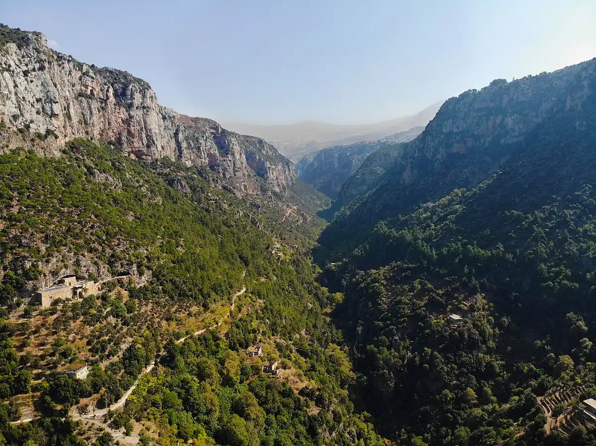
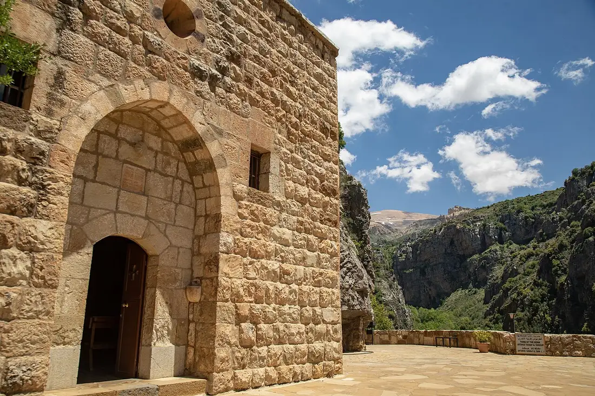
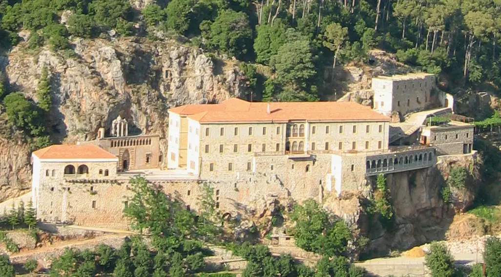
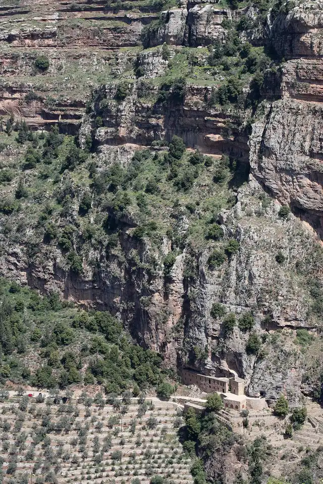

The Qadisha Valley, Lebanon's Holy Valley
In the mountains of North Lebanon, below the country's highest peaks, a deep green gorge carries a name that says everything about it: Qadisha, the Holy Valley. For more than a thousand years its caves and cliff-built monasteries sheltered Maronite monks, hermits, and patriarchs - and today the whole valley is a UNESCO World Heritage site, together with the Cedars of God that stand above its source.

Why It's Called the Holy Valley
Qadisha is Aramaic for "holy" - the same Semitic root as the Hebrew kadosh. The valley is also written Kadisha, and in French sources Ouadi Qadisha; all of them mean the Holy Valley. The gorge cuts into the flank of Mount Lebanon beneath Qornet es-Sawda, the country's highest summit, and the river that carved it - Nahr Qadisha, the Holy River - rises from a grotto just below the Cedars of God before running some 35 kilometers toward the sea. Below Bsharri the valley forks into its two great branches, Qannoubine and Qozhaya.
People sheltered in the valley's caves from the Stone Age onward, and from the first centuries of Christianity solitaries came here to pray in them. So many monks, hermits, monasteries, and shrines eventually filled the gorge that the valley itself took the name of what it held: holy.
A Refuge for the Maronites
For the Maronite Church, the Qadisha is not scenery - it is survival. When persecution and war swept the coast and the plains, the community withdrew into a gorge that armies could barely enter. The Mamluk campaigns of 1268 and 1283 stormed the mountain and destroyed its villages; people hid in fortress-caves high in the cliffs, and in one of them, at Asi al-Hadath, excavators found the mummified remains of villagers from that era, left where the cave had kept them.
Through the hardest centuries the valley held the Church together. The rock-cut monastery of Qannoubine became the seat of the Maronite patriarchs, and twenty-four of them governed from the gorge between 1440 and 1823. A Maronite priest, Father Hani Tawk, put the feeling plainly to a reporter in 2022: "It's our roots here. Our Jerusalem, our Rome."
The Monasteries of the Valley
Dozens of monasteries, hermitages, and cave chapels are built into the Qadisha's walls - some still home to monks and nuns, some kept only by the rock. Four give the shape of the whole:
Deir Qannoubine, the Monastery of Qannoubine
The heart of the holy valley. Cut into the cliff at the bottom of the Qannoubine branch, this was the seat of the Maronite patriarchs from 1440 to 1823, and its medieval wall paintings still survive in the stone church. A handful of nuns live here all year round, through snow and silence alike. You reach it on foot, down steep paths from the rim, or by a narrow track carved into the valley wall.

Deir Mar Antonios Qozhaya, the Monastery of Saint Anthony
On the opposite branch of the valley stands Qozhaya, dedicated to Saint Anthony the Great, the father of monasticism. Tradition carries its origins back to the disciples of Saint Hilarion in the fourth century, and documents confirm a monastery here by the Middle Ages; destroyed in the sixteenth century, it was rebuilt and is today a mother house of the Lebanese Maronite Order. Qozhaya also holds a place in world history: a press installed at the monastery printed a bilingual Psalter in Syriac and Garshuni in 1610 - the first book printed in the eastern Ottoman Empire.

Deir es-Salib, the Monastery of the Cross
Below the village of Hadchit, in the Houlat branch of the Qannoubine valley, a whole church hides inside a great cave in the cliff. Deir es-Salib keeps medieval wall paintings still in place on its plaster - among the most studied in the valley - and remains one of the Qadisha's least-visited treasures.
Deir Mar Lichaa, the Monastery of Saint Elisha
First mentioned in the fourteenth century, Mar Lichaa is the valley at its most austere: four chapels cut directly into the rock, shared down the centuries by Maronite solitaries and later by Discalced Carmelite hermits. Hermits still keep the valley's oldest vocation here.

Around these four lie many more: Saydet Hawqa, founded in the late thirteenth century on a ledge at 1,150 meters; Mar Sarkis at Ras al-Nahr, the "Watchful Eye of the Qadisha," whose church dates to the eighth century; and hermitages beyond counting, some no more than a doorway in the cliff.
Saint Charbel and the Qadisha
Saint Charbel was born in 1828 in Bekaa Kafra, the village at the very head of the holy valley, and grew up looking down into the Qannoubine gorge that had formed his Church. The path of his life ran through this country: the novitiate at Our Lady of Mayfouq, the monastery of Annaya on the ridge above, and finally the hermitage of Saints Peter and Paul, which stands high above Bsharri looking across the Qadisha Valley itself.
He is, in the end, the best-known son of the tradition the valley carried - the Maronite eremitic life that filled these caves for a thousand years produced, in him, a hermit the whole world now comes to see. The Saint Charbel Trail links his places on foot through this landscape, and the full timeline of his life is on our history page.
UNESCO World Heritage Status
In 1998 UNESCO inscribed the valley on the World Heritage List as "Ouadi Qadisha (the Holy Valley) and the Forest of the Cedars of God (Horsh Arz el-Rab)" - reference 850, under cultural criteria (iii) and (iv). UNESCO describes the Qadisha as one of the most important early Christian monastic settlements in the world: a place where the caves, monasteries, and terraced hillsides preserve a way of life continuous since the first centuries of the Church.
The pairing in the inscription is the journey itself: the monasteries in the gorge below, the last grove of the biblical cedars on the heights above, and Saint Charbel's birthplace between them - three World Heritage neighbors within a fifteen-minute drive.
Visiting the Valley
The two rim towns are the natural bases - Bsharri for the Qannoubine side, Ehden for Qozhaya - each about two hours by road from Beirut. Qozhaya is the easy monastery: a road descends right to it. Qannoubine is earned on foot, down the steep paths from the rim or along the valley track, and the walk is half the meaning of the visit. Spring brings wildflowers and the full river; autumn is golden and quiet; in winter the high roads can close under snow.
These are working monasteries, not museums: dress modestly, keep voices low, and come in the morning when the light fills the gorge. A day pairs the valley with the Cedars of God and Bekaa Kafra above it; a second day adds Annaya and the tomb of Saint Charbel. For the whole map, see our guide to Saint Charbel places in Lebanon.
Frequently Asked Questions
What does "Qadisha" mean?
Qadisha is Aramaic for "holy." The valley is also spelled Kadisha, or written in French as Ouadi Qadisha - all of them mean the Holy Valley, named for the monasteries and hermits who filled it.
Why is the Qadisha Valley a UNESCO World Heritage site?
UNESCO inscribed it in 1998, together with the Forest of the Cedars of God, as one of the most important early Christian monastic settlements in the world - a landscape where monastic life has continued in the caves and cliffs since the first centuries of Christianity.
Can you visit the monasteries in the Qadisha Valley?
Yes. Qozhaya is reachable by car, and Qannoubine, Mar Lichaa, and the other valley monasteries by footpaths from the rim towns. They are working monasteries - visitors are welcome, with modest dress and quiet.
Is the Qadisha Valley the same as the Qannoubine Valley?
Qannoubine is one of the Qadisha's two great branches - the one that held the patriarchs' seat from 1440 to 1823. The other branch, running beneath Ehden, is Qozhaya. Together they make up the Holy Valley.
What is Saint Charbel's connection to the Qadisha Valley?
He was born in Bekaa Kafra at the head of the valley, and his hermitage above Bsharri looks across it. The eremitic tradition the Qadisha carried for a thousand years is the tradition he lived - the Saint Charbel Trail walks through this country today.
How do you get to the Qadisha Valley from Beirut?
By road to Bsharri or Ehden, about two hours from Beirut through the mountains of North Lebanon. From Bsharri, footpaths descend into the Qannoubine branch; a road runs down to Qozhaya from the Ehden side.
Sources
- UNESCO World Heritage Centre: Ouadi Qadisha (the Holy Valley) and the Forest of the Cedars of God (Horsh Arz el-Rab) - inscription 850, 1998
- The National, April 15, 2022: Lebanon's Christians seek simple Easter respite in ancient Qadisha Valley - Deir Qannoubine today, and Father Hani Tawk's words
- USEK Library, Holy Spirit University of Kaslik: Hidden Treasures - the 1610 Qozhaya Psalter, first book printed in the eastern Ottoman Empire
- Journal of Eastern Mediterranean Archaeology and Heritage Studies: Wall Paintings in the Qadisha Valley - the medieval paintings of Deir es-Salib and Saydet Qannoubine